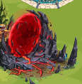
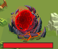
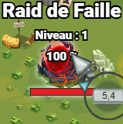
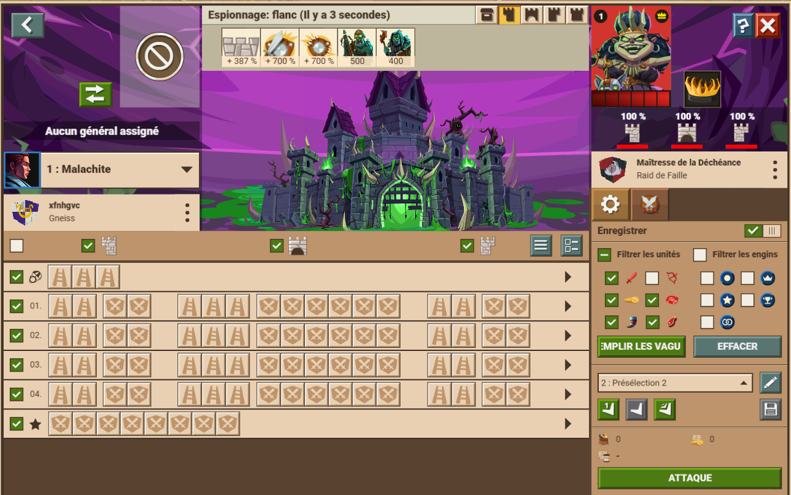
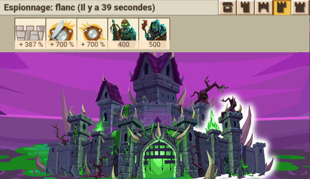
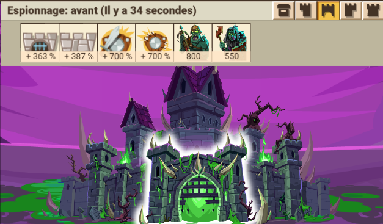
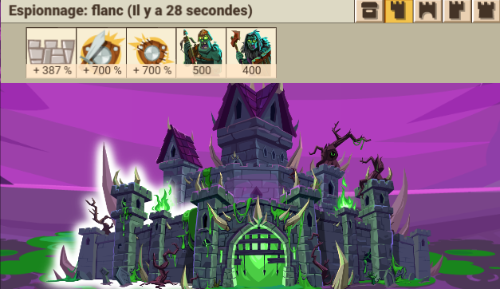
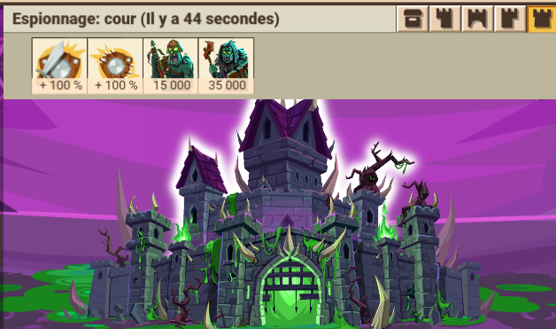
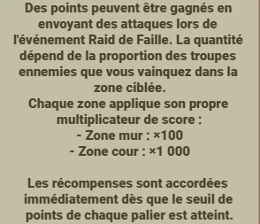
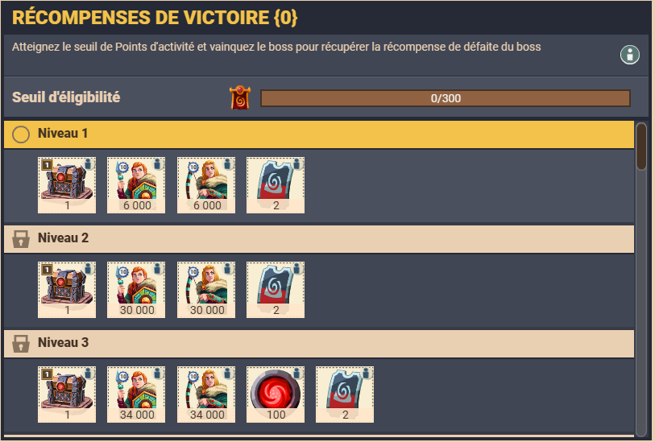

Event d'une semaine, on perds pas mal de soso mais les récompenses sont top :)
Parmis les personnages/héraults devant le cp, il y a un stand pour cet eve :

Il y a également une miniature de la faille sur la map :

Utiliser la capacité « blessure profonde » de Toril Une fois le mur kaput, utiliser la capacité de Horatio « Pourfendeur de géants » Casser TOUTS les murs permettent un bonus d’attaque de 60% dans la cour (0 pour 2 murs et –60 pour 1) Murs cassés après attaque 5 min (champignons) et 20 min (normal)





Les points sont distribués en fonction des zones du mur percées, et des ennemis tués

